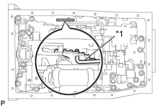
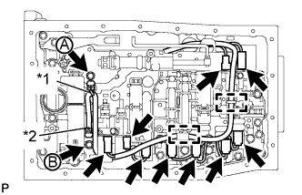
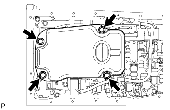
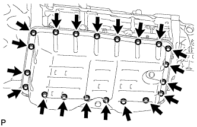

VALVE BODY ASSEMBLY > INSTALLATION |
| 1. INSTALL TRANSMISSION VALVE BODY ASSEMBLY |
 |
Install the spring and check ball body.
| *1 | Spring |
| *2 | Check Ball Body |
|  |
Insert the pin of the manual valve into the hole of the manual valve lever.
| *1 | Pin |
 |
Install the transmission valve body with the 19 bolts.
Install the detent spring and detent spring cover with the bolt.
| 2. CONNECT TRANSMISSION WIRE |
|  |
Connect the 9 solenoid valve connectors.
Connect the 2 ATF temperature sensors with the 2 clamps and 2 bolts.
| *1 | Orange |
| *2 | Blue |
Attach the wire harness to the 2 clamps.
| 3. INSTALL VALVE BODY OIL STRAINER ASSEMBLY |
|  |
Coat a new O-ring with ATF and install it to the oil strainer.
Install the oil strainer with the 4 bolts.
| 4. INSTALL AUTOMATIC TRANSMISSION OIL PAN SUB-ASSEMBLY |
|  |
Install a new gasket and the oil pan with the 20 bolts.
| 5. ADD AUTOMATIC TRANSMISSION FLUID |
Add automatic transmission fluid (Click here).
| 6. RESET MEMORY |
Perform the Reset Memory procedures (A/T initialization) (Click here).